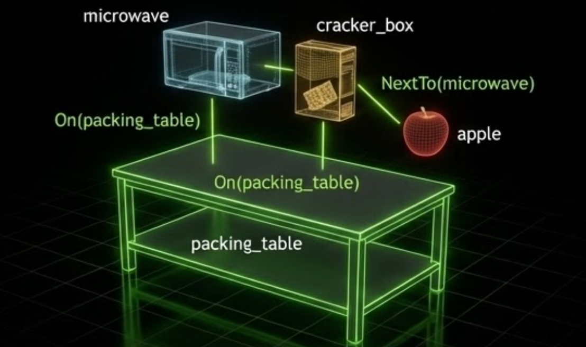

Object Placement#
The Motivation#
The traditional approach to placing objects in a simulation environment is to set each object’s pose manually. Suppose you want to place a microwave on a table, with a cracker box sitting next to it. You look up the table surface height, measure the object dimensions, and compute the coordinates by hand:
# Table surface is at z = 0.42 m in world frame.
# Microwave is 0.50 m wide (x) and 0.30 m tall (z).
# Cracker box is 0.064 m wide (x) and 0.212 m tall (z).
CLEARANCE = 0.01 # m
microwave_z = 0.42 + 0.30 / 2 + CLEARANCE # = 0.58
microwave.set_initial_pose(Pose(position_xyz=(0.0, 0.0, microwave_z)))
cracker_box_x = 0.0 + 0.50 / 2 + CLEARANCE + 0.064 / 2 # = 0.292
cracker_box_z = 0.42 + 0.212 / 2 + CLEARANCE # = 0.536
cracker_box.set_initial_pose(Pose(position_xyz=(cracker_box_x, 0.0, cracker_box_z)))
This works, but it is brittle. If you swap the microwave for a larger appliance, every downstream coordinate that depended on its size must be recalculated. If you use a different table, the surface height changes and all Z values are wrong. If you add an apple next to the cracker box, you need to chain yet another calculation on top of the previous ones.
The relations system eliminates this problem. Instead of computing coordinates, you declare constraints:
from isaaclab_arena.relations.relations import IsAnchor, On, NextTo, Side
packing_table.add_relation(IsAnchor())
microwave.add_relation(On(packing_table))
cracker_box.add_relation(On(packing_table))
cracker_box.add_relation(NextTo(microwave, side=Side.POSITIVE_X, distance_m=0.01))
apple.add_relation(On(packing_table))
apple.add_relation(NextTo(cracker_box, side=Side.POSITIVE_X, distance_m=0.01))
A constraint solver reads the actual bounding boxes of each object and computes positions that satisfy all the constraints together. Swap the microwave for any other object and the solver re-derives everything automatically — the cracker box and apple will still end up next to it at the right height, regardless of the new object’s dimensions.
{kind=link}

Example relations: a microwave and a cracker box both with On(packing_table),
and an apple with NextTo(microwave). The solver reads these constraints and
computes a valid, collision-free layout automatically.#
Try It Out#
The pick_and_place_maple_table environment is a good place to experiment with object placement.
By default it places one pick-up object and one destination on the table. You can add any number of
extra objects via --additional_table_objects — each one receives an On(table_reference)
relation and the solver places them all without collisions:
python isaaclab_arena/evaluation/policy_runner.py \
--policy_type zero_action \
--num_steps 100 \
pick_and_place_maple_table \
--embodiment droid_rel_joint_pos \
--hdr home_office_robolab \
--additional_table_objects cracker_box mug tomato_soup_can
Swap any of those names for other registered objects to see the solver automatically adapt the layout to the new sizes and footprints.

Five sequential runs on the maple table environment, each adding more objects (0 to 5 extra). The solver automatically computes a valid, collision-free layout for each configuration — no manual pose adjustments needed when the object set changes.#
Core Concepts#
The three core concepts you work with directly are Spatial Relations, Anchors, and
Placement Modifiers. Under the hood, ArenaEnvBuilder collects these from your scene,
runs the solver, and applies the results automatically — you rarely need to interact with the
solver directly.
Relations are attached to objects via add_relation():
from isaaclab_arena.relations.relations import IsAnchor, On, AtPosition
table_reference.add_relation(IsAnchor())
cracker_box.add_relation(On(table_reference))
cracker_box.add_relation(AtPosition(x=0.4, y=0.0))
Multiple relations on the same object are all satisfied simultaneously.
Spatial Relations#
Spatial relations constrain where an object may be relative to a parent object or world position.
On
Places a child object on top of a parent object. The child’s footprint must lie within the parent’s horizontal extents, and the child’s bottom surface rests at the top of the parent with an optional clearance gap:
from isaaclab_arena.relations.relations import On
cracker_box.add_relation(On(table_reference))
Parameters:
parent: The reference object to place on top ofclearance_m(default0.01): Extra gap above the parent’s top surface, in metersrelation_loss_weight(default1.0): Weight in the solver’s loss function
Note
On positions the child at the top of the parent’s axis-aligned bounding box, not
its physical surface. For concave objects such as bowls, the bounding box top is at the
rim, so the child may end up inside the bowl rather than resting on it. Avoid using
On with concave objects as the parent.
NextTo
Places a child object adjacent to a parent object at a specified distance along a given axis:
from isaaclab_arena.relations.relations import NextTo, Side
mug.add_relation(On(table_reference))
mug.add_relation(NextTo(cracker_box, side=Side.POSITIVE_X, distance_m=0.1))
The Side enum selects the direction: POSITIVE_X, NEGATIVE_X, POSITIVE_Y, or NEGATIVE_Y.
The cross_position_ratio parameter (default 0.0) controls alignment along the perpendicular axis:
-1.0 aligns with the parent’s near edge, 0.0 centers the child, and 1.0 aligns with
the parent’s far edge.
Parameters:
parent: The reference object to place next toside: Which side to place on (Sideenum)distance_m(default0.05): Distance from the parent’s edge, in meterscross_position_ratio(default0.0): Alignment along the perpendicular axis, in[-1, 1]relation_loss_weight(default1.0): Weight in the solver’s loss function
AtPosition
Pins an object to specific world-frame coordinates. You can constrain any subset of axes —
unconstrained axes are determined by other relations (for example, On controls the Z axis):
from isaaclab_arena.relations.relations import AtPosition
cracker_box.add_relation(On(table_reference))
cracker_box.add_relation(AtPosition(x=0.4, y=0.0)) # z left free for On to control
Parameters:
x,y,z: Target world coordinates (any can beNoneto leave unconstrained)relation_loss_weight(default1.0): Weight in the solver’s loss function
Anchors#
Every scene must have at least one anchor — an object whose position is fixed during
optimization and serves as the reference frame for all other objects. Anchors are marked
with IsAnchor() and are not moved by the solver.
Any object in the scene can be an anchor. A common case is using an ObjectReference
that points to a specific surface within a background asset, such as a tabletop or counter,
whose pose is derived automatically from the USD scene:
from isaaclab_arena.assets.object_reference import ObjectReference
from isaaclab_arena.relations.relations import IsAnchor
table_reference = ObjectReference(
name="table",
prim_path="{ENV_REGEX_NS}/office_table/Geometry/sm_tabletop_a01_01/sm_tabletop_a01_top_01",
parent_asset=table_background,
)
table_reference.add_relation(IsAnchor())
You can have multiple independent anchors in a scene — for example, a table and a separate counter. Objects are then placed relative to whichever anchor they reference.
Placement Modifiers#
Placement modifiers are attached alongside spatial relations and affect how the solved position is applied to the object. They are not processed by the solver itself.
RandomAroundSolution
After solving, converts the fixed solved pose into a PoseRange so the object’s position
is randomized within a box around the solution at each environment reset:
from isaaclab_arena.relations.relations import On, RandomAroundSolution
cracker_box.add_relation(On(table_reference))
cracker_box.add_relation(RandomAroundSolution(x_half_m=0.1, y_half_m=0.1))
At each reset, the object spawns at a random position uniformly sampled within
[solved_x ± x_half_m, solved_y ± y_half_m, solved_z ± z_half_m].
The solver only validates the center of this range — the solved position itself. No placement checking is performed at reset time, so positions near the edges of the range may be physically invalid (e.g. the object partially off the surface, or overlapping a neighbour).
The safest approach is to combine RandomAroundSolution with AtPosition.
Because AtPosition pins the object to a known world coordinate, you can reason
about the available margin purely from the surface geometry and the object’s bounding
box — no need to inspect solver output. For example, if a surface spans x ∈ [0.0, 1.0]
and you place the object at x = 0.5 with a footprint of 0.1 m, there is
0.5 - 0.05 = 0.45 m of margin on each side, so x_half_m = 0.1 is safely
within bounds:
obj.add_relation(On(table_reference))
obj.add_relation(AtPosition(x=0.5, y=0.0))
obj.add_relation(RandomAroundSolution(x_half_m=0.1, y_half_m=0.05))
Parameters: x_half_m, y_half_m, z_half_m — half-extents in meters (default 0.0);
roll_half_rad, pitch_half_rad, yaw_half_rad — half-extents in radians (default 0.0).
RotateAroundSolution
Applies an explicit rotation (in Euler angles) on top of the solver’s solution:
import math
from isaaclab_arena.relations.relations import On, RotateAroundSolution
cracker_box.add_relation(On(table_reference))
cracker_box.add_relation(RotateAroundSolution(yaw_rad=math.pi / 4)) # 45° rotation
When combined with RandomAroundSolution, the rotation is applied to the PoseRange center.
Parameters: roll_rad, pitch_rad, yaw_rad — rotation in radians (default 0.0).
How the Solver Works#
The solver (RelationSolver) treats the X, Y, Z position of each non-anchor object as
learnable parameters and minimizes a total loss derived from all attached spatial relations.
Each relation type contributes a differentiable loss component:
On: Band loss on X/Y (child footprint within parent), point loss on Z (child bottom at parent top)
NextTo: Half-plane loss (correct side), band loss (perpendicular alignment), distance loss (target gap)
AtPosition: Point loss on each constrained axis
Losses use linear ReLU-style functions (zero inside the valid region, linearly growing outside), which provide constant gradients that work well with the Adam optimizer.
ObjectPlacer wraps the solver with retry logic and geometric validation:
Random initial positions are generated within a bounding box centered on the anchor
The solver runs up to
max_itersgradient steps (default 600)The result is validated: no pair of objects may overlap, and all
Onconstraints must be satisfiedIf validation fails, the process repeats up to
max_placement_attemptstimes (default 5)
ArenaEnvBuilder Integration#
When you build an environment with ArenaEnvBuilder, object placement runs automatically.
You do not need to call ObjectPlacer directly — just attach relations to your objects
and add them to the scene:
from isaaclab_arena.assets.object_reference import ObjectReference
from isaaclab_arena.relations.relations import IsAnchor, On, AtPosition
from isaaclab_arena.scene.scene import Scene
from isaaclab_arena.environments.isaaclab_arena_environment import IsaacLabArenaEnvironment
from isaaclab_arena.environments.arena_env_builder import ArenaEnvBuilder
# Define anchor
table_reference = ObjectReference(
name="table",
prim_path="{ENV_REGEX_NS}/office_table/Geometry/sm_tabletop_a01_01/sm_tabletop_a01_top_01",
parent_asset=table_background,
)
table_reference.add_relation(IsAnchor())
# Define placeable objects
cracker_box = asset_registry.get_asset_by_name("cracker_box")()
cracker_box.add_relation(On(table_reference))
cracker_box.add_relation(AtPosition(x=0.0, y=0.0))
mug = asset_registry.get_asset_by_name("mug")()
mug.add_relation(On(table_reference))
# Build scene and environment
scene = Scene(assets=[table_background, table_reference, cracker_box, mug, light])
env = IsaacLabArenaEnvironment(name="demo", scene=scene, ...)
env_builder = ArenaEnvBuilder(env, args_cli)
gym_env = env_builder.make_registered()
The builder automatically:
Collects all objects with at least one relation from the scene
Enforces no-overlap between all object pairs automatically (built-in solver behavior, controlled by
clearance_m)Creates an
ObjectPlacerand runs placementSets the solved poses on the objects before handing them to Isaac Lab
Usage Patterns#
Single object on a surface
The most common pattern: an anchor marks a surface, and one or more objects are placed on it.
table_reference.add_relation(IsAnchor())
pick_object.add_relation(On(table_reference))
destination.add_relation(On(table_reference))
Precise XY placement
Combine On with AtPosition when you need the object at a known world location:
pick_object.add_relation(On(counter_top))
pick_object.add_relation(AtPosition(x=0.4, y=0.0))
Multiple objects arranged side-by-side
Use NextTo to arrange objects in a row:
cracker_box.add_relation(On(table_reference))
cracker_box.add_relation(AtPosition(x=0.0, y=0.0))
mug.add_relation(On(table_reference))
mug.add_relation(NextTo(cracker_box, side=Side.POSITIVE_X, distance_m=0.1))
tomato_soup_can.add_relation(On(table_reference))
tomato_soup_can.add_relation(NextTo(cracker_box, side=Side.NEGATIVE_X, distance_m=0.1))
Episode-level randomization
Add RandomAroundSolution to vary object positions across resets while respecting the spatial
constraints established by the solver:
pick_object.add_relation(On(counter_top))
pick_object.add_relation(AtPosition(x=4.05, y=-0.58))
pick_object.add_relation(RotateAroundSolution(yaw_rad=math.pi / 2))
pick_object.add_relation(RandomAroundSolution(x_half_m=0.05, y_half_m=0.05))
Multiple anchors
Scenes with multiple fixed reference surfaces use one IsAnchor per surface:
table.add_relation(IsAnchor())
counter.add_relation(IsAnchor())
mug.add_relation(On(table))
bowl.add_relation(On(counter))
Configuration#
ObjectPlacerParams controls the placer’s behavior:
from isaaclab_arena.relations.object_placer import ObjectPlacer
from isaaclab_arena.relations.object_placer_params import ObjectPlacerParams
placer = ObjectPlacer(params=ObjectPlacerParams(
max_placement_attempts=10,
placement_seed=42,
verbose=True,
))
Key parameters:
max_placement_attempts(default10): Number of solver restarts before giving upplacement_seed(defaultNone): Random seed for reproducible placementson_relation_z_tolerance_m(default5e-3): Tolerance for Z validation ofOnrelations
The underlying solver can also be tuned via RelationSolverParams nested inside ObjectPlacerParams:
from isaaclab_arena.relations.relation_solver_params import RelationSolverParams
placer = ObjectPlacer(params=ObjectPlacerParams(
solver_params=RelationSolverParams(
max_iters=1000,
lr=0.005,
convergence_threshold=1e-5,
)
))
Key solver parameters:
max_iters(default600): Maximum optimization iterations per attemptlr(default0.01): Adam optimizer learning rateconvergence_threshold(default1e-4): Stop early when loss falls below this value